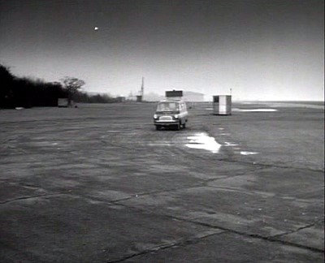
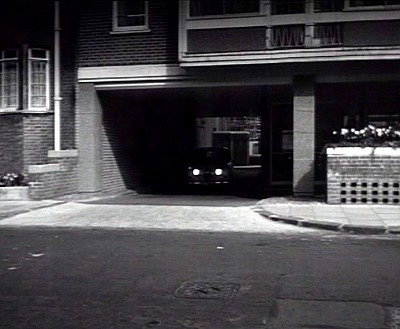
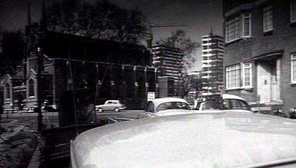
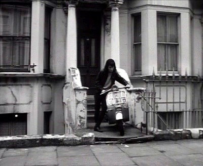
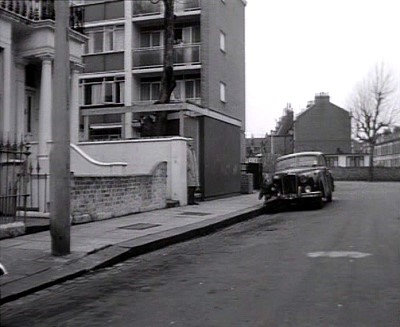

|
|
HELP FIND THE FOLLOWING LOCATIONS
PAGE 76
GIDEON’S
WAY: The
Great Plane Robbery (Leslie Norman: March-April
1965)
Unknown 1 – A Russian plane loaded with gold is about to arrive at




(Alan Field, August 2007)

 
Unknown 3 – The real van of Gold passes a pub on the way to the garage.

 ”The Pem…” pub is probably a
Pembroke…something.
”The Pem…” pub is probably a
Pembroke…something.
Unknown 4 – The police are watching Kautsky’s house so he sends his son, Sid to collect the pay-off money.
 

Unknown 5 – Bailey is watched as he makes a call from a phone box.

Unknown 6 – Dr. S.G. Hill – The injured Frank is taken by his friends to the trustworthy Dr. S.G. Hill. Hill calls in the police as soon as he realises the connection of his patient to the gold robbery.


Think you know a spot? Need a bigger image? Email me.
< Previous | Index | Avengerland | Next >
Copyright © 2003 Anthony R. McKay